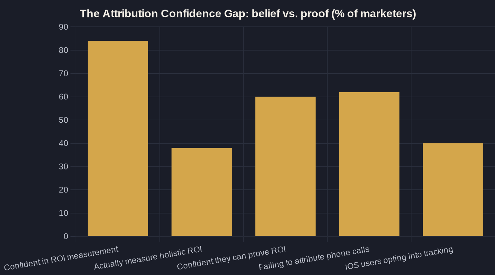

The 2026 Attribution Gap: Why Your Ad Platforms All Report Different Numbers
Google says 40 conversions. Meta says 31. GA4 says 22. Your phone rang 60 times. Here is why none of those numbers reconcile — and which one actually maps to revenue.

Key takeaways
- Your platforms will never agree because each one only sees its own slice of the path, uses a different attribution window, and takes credit for the same job — so one conversion gets reported two or three times.
- After Apple's App Tracking Transparency, only about 40% of iOS users opt in, forcing platforms to model and estimate conversions instead of counting them — which widens the gap further.
- For local service businesses the phone is the primary conversion, yet 62% of marketers fail to attribute revenue to inbound calls; without call tracking your reports undervalue what actually books jobs.
- There is a real confidence-vs-proof gap: 84% of marketers feel confident in their ROI measurement, but only 38% measure holistic ROI and just 60% can actually demonstrate it.
- The fix is not a better dashboard but a single revenue-based source of truth — Owner's Math traces one dollar from impression to booked job, turning platforms into inputs you sanity-check rather than oracles you obey.
The Marketing Attribution Problem, Defined
If you run Google Ads, Meta, and a call-tracking tool, you have almost certainly noticed that they never agree. Google says you got 40 conversions last month. Meta claims 31. Your GA4 dashboard shows 22. Your phone rang 60 times. None of those numbers reconcile, and that is the marketing attribution problem in one sentence: every system is measuring a different thing, in a different way, over a different window, and then calling its answer the truth.
For a local service business, this is not an academic annoyance. It is the difference between confidently scaling a campaign that books real jobs and quietly funding one that books nothing. Before you can trust any number, you have to understand why the numbers conflict — and which one actually maps to revenue. That is the entire premise behind tracing marketing ROI for a local business from the first impression all the way to the booked job.
Why Your Ad Platforms Will Never Report the Same Number
Start with the simplest reason the dashboards disagree: each platform only sees its own slice of the customer's path, and each one is incentivized to take credit. Meta counts a conversion if someone saw or clicked your ad inside its window. Google counts the same conversion if its ad was touched inside its window. When a customer sees a Facebook ad on Monday, searches your name on Wednesday, and calls on Friday, both platforms book that single job — so two systems report one outcome as two.
Then there is the attribution window itself. A 7-day click window and a 30-day click window count the same campaign completely differently. This is not a glitch; it is the design. It is also why one-third of marketing leaders now say measuring the ROI of marketing is their single biggest challenge — ranking it above both sales-marketing alignment and budget. In the United States that figure jumps to 40.8% of leaders, nearly eight points above the global average, because American owners feel near-term revenue pressure first.
The Privacy Wall: When Platforms Stopped Counting and Started Guessing
The disagreement got dramatically worse after Apple changed the rules. With App Tracking Transparency, iPhone users now have to opt in before apps can track them across other companies' apps and sites. The real-world opt-in rate is only about 40% of users who see the prompt, and closer to 30% once system-level restrictions are included.
That means for the majority of iOS traffic, platforms can no longer deterministically tie an ad to a sale — they have to model and estimate it instead. "Modeled conversions" is the polite industry term for an educated guess. When Meta and Google fill their gaps with different models, their numbers diverge even further. The marketing attribution problem is now partly a privacy-driven measurement problem, and it is not going back.
The Phone Call Is Your Biggest Attribution Blind Spot
Here is the blind spot that hurts local owners most: the phone. For a plumber, a dentist, a med spa, or an HVAC company, the primary conversion is not a web form — it is a ringing phone. Yet 62% of marketers fail to attribute revenue to inbound phone calls, which means most ad dashboards literally cannot see the action that drives your business.
If your best lead source is a phone call and your ad platform only counts form fills, your reports will systematically undervalue what is working and overvalue what is not. You will pause the campaign that actually books jobs because it looks quiet on screen. This is why how fast you answer that call and what each booked job truly costs you matter more than any platform's conversion count — and why call tracking is non-negotiable for honest local attribution.
| Source | Default attribution | Typical lookback window | Counts modeled/estimated conversions? | Main blind spot |
|---|---|---|---|---|
| Google Ads | Data-driven | 30-day click | Yes — modeled when signals are missing | Cross-device paths and untagged phone calls |
| Meta Ads | 7-day click / 1-day view | 7-day | Yes — heavy modeling after iOS changes | View-through inflation and iOS opt-outs |
| GA4 | Data-driven | Varies by event | Yes — behavioral modeling | Sessionization and consent gaps |
| Call tracking (e.g. CallRail) | First/last touch on the call | Per provider | No — counts real, completed calls | Only as accurate as where numbers are placed |

The Confidence Gap: What Owners Believe vs. What They Can Prove
There is a striking gap between how confident marketers feel and what they can actually prove. Nielsen found that 84% of marketers say they are extremely or very confident in their ROI measurement, yet only 38% actually evaluate holistic ROI by measuring traditional and digital marketing together. Confidence is high; verified measurement is not.
The independent data agrees. Only 60% of marketers are confident they can demonstrate the ROI of their marketing — meaning four in ten cannot reliably prove what their spend returns. For an owner writing the checks, that is the number that should sting. The chart below shows how wide the gap runs between what marketers believe and what they can verify.
What Each Dashboard Is Actually Counting
To make this concrete, here is what four common sources are actually counting in the same week. They are not lying to you — they are answering different questions over different windows. Once you see the columns side by side, the disagreement stops being mysterious and starts being predictable.
Notice that only one row counts real, un-modeled events: the call-tracking tool. That is not a coincidence. The closer a measurement sits to the moment a customer commits — a call, a booked appointment, a signed job — the less it has to guess. Everything upstream of that moment is, to some degree, an estimate.
Closing the Attribution Gap With Owner's Math
You will never get four platforms to agree, and you should stop trying. The fix is not a better dashboard; it is a single source of truth that you own. That is what Owner's Math does (Owner's Math = tracing what $1 of marketing actually returns): it follows one dollar of ad spend through impression, lead, booked job, and revenue, so you measure the outcome — booked, paid work — instead of arguing over platform-reported clicks.
When you anchor on revenue, the marketing attribution problem shrinks to a manageable size. The platforms become inputs you sanity-check, not oracles you obey. From there you can find where your budget is quietly leaking and decide whether AI tools for a local business are worth adding — both of which sit downstream of getting attribution honest first.
If you cannot cleanly answer what your marketing is worth this quarter, that is not a you problem — it is an attribution problem, and it is fixable. I send a short, plain-English breakdown of how local owners close this gap one move at a time. If you would rather walk through your own numbers, book a call and we will trace a single dollar of your spend from impression to booked job together.
Sources
Want this run on your numbers?
Book a call and we will run the Owner's Math on your business — clear numbers, a straight plan, no pitch. Or read the free Playbook first.